LGCPs - Spatial covariates
David Borchers and Finn Lindgren and Hans Montcho
Generated on 2026-07-27
Source:vignettes/articles/2d_lgcp_covars_groupcv.Rmd
2d_lgcp_covars_groupcv.RmdSet things up
library(INLA)
library(inlabru)
library(fmesher)
library(RColorBrewer)
library(ggplot2)
library(patchwork)
# Activate DIC output
bru_options_set(control.compute = list(dic = TRUE, waic = TRUE))Introduction
We are going to fit spatial models to the gorilla data, using factor
and continuous explanatory variables in this practical. We will fit one
using the factor variable vegetation, the other using the
continuous covariate elevation
(Jump to the bottom of the practical if you want to start gently with a 1D example!)
Get the data
data(gorillas_sf, package = "inlabru")This dataset is a list (see help(gorillas_sf) for
details. Extract the objects you need from the list, for
convenience:
nests <- gorillas_sf$nests
mesh <- gorillas_sf$mesh
boundary <- gorillas_sf$boundary
gcov <- gorillas_sf_gcov()
#> Loading required namespace: terraFactor covariates
Look at the vegetation type, nests and boundary:
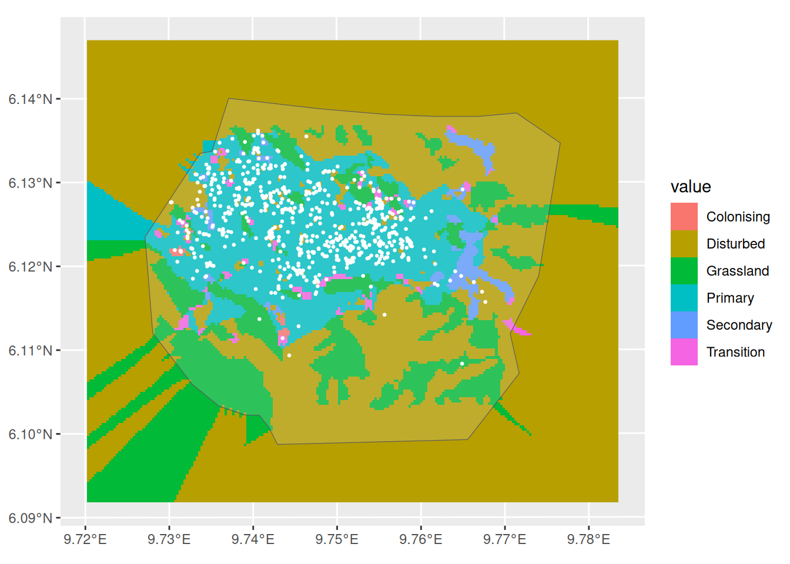
Or, with the mesh:
ggplot() +
gg(gcov$vegetation) +
gg(mesh) +
gg(boundary, alpha = 0.2) +
gg(nests, color = "white", cex = 0.5)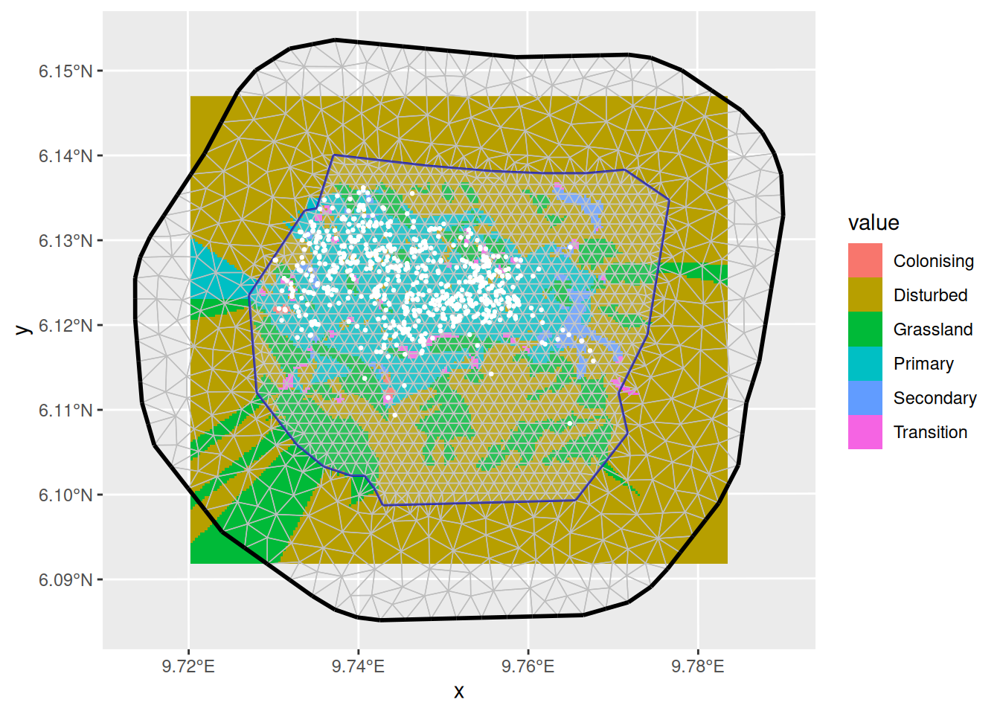
A model with vegetation type only
It seems that vegetation type might be a good predictor because
nearly all the nests fall in vegetation type Primary. So we
construct a model with vegetation type as a fixed effect. To do this, we
need to tell ‘lgcp’ how to find the vegetation type at any point in
space, and we do this by creating model components with a fixed effect
that we call vegetation (we could call it anything), as
follows:
comp_veg <- geometry ~ vegetation(gcov$vegetation, model = "factor_full") - 1Notes: * We need to tell ‘lgcp’ that this is a factor fixed effect,
which we do with model="factor_full", giving one
coefficient for each factor level. * We need to be careful about
overparameterisation when using factors. Unlike regression models like
‘lm()’, ‘glm()’ or ‘gam()’, ‘lgcp()’, inlabru does not
automatically remove the first level and absorb it into an intercept.
Instead, we can either use model="factor_full" without an
intercept, or model="factor_contrast", which does remove
the first level.
comp_veg_alt <-
geometry ~ vegetation(gcov$vegetation, model = "factor_contrast") +
Intercept(1)To enable group.cv calculations, we need to split the domain into spatial regions, and compute the association of each observed point to these subregions.
cvpart <- cv_hex(boundary, cellsize = 0.4, n_group = 3)
ggplot() +
gg(cvpart, aes(fill = group), alpha = 0.5) +
gg(boundary, alpha = 0) +
gg(nests, color = "white", cex = 0.5)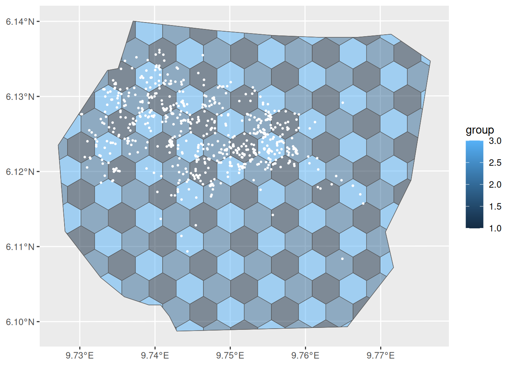
cvpart$block_ID <- seq_len(nrow(cvpart))
cvpart$group <- NULL
a <- sf::st_intersects(nests, cvpart)
if (any(lengths(a) != 1)) {
stop("Point in none or multiple polygons")
}
nests$.block <- unlist(a)Fit the model as usual, and increasing the integration scheme resolution to better match the covariate:
mesh_int <- fm_subdivide(mesh, 2)
fit_veg <- lgcp(
comp_veg,
nests,
samplers = cvpart,
domain = list(geometry = mesh_int),
control.gcpo = list(enable = FALSE, type.cv = "joint", num.level.sets = 2),
options = list(bru_verbose = 0)
)
# options = list(control.compute = list(control.gcpo = list(enable = TRUE))))Predict the intensity, and plot the median intensity surface. (In older versions, predicting takes some time because we did not have vegetation values outside the mesh so ‘inlabru’ needed to predict these first. Since v2.0.0, the vegetation has been pre-extended.)
The predict function of inlabru takes into
its data argument an sf object or other object
supported by the predictor evaluation code (for non-geographical data,
typically a data.frame). We can use the
inlabru function pixels to generate an
sf object with points only within the boundary, using its
mask argument, as shown below.
pred.df <- fm_pixels(mesh, mask = boundary)
intensity_veg <- predict(fit_veg, pred.df, ~ exp(vegetation))
# gg() with sf points and geom = "tile" plots a raster
ggplot() +
gg(intensity_veg, geom = "tile") +
gg(boundary, alpha = 0, lwd = 2) +
gg(nests, color = "DarkGreen")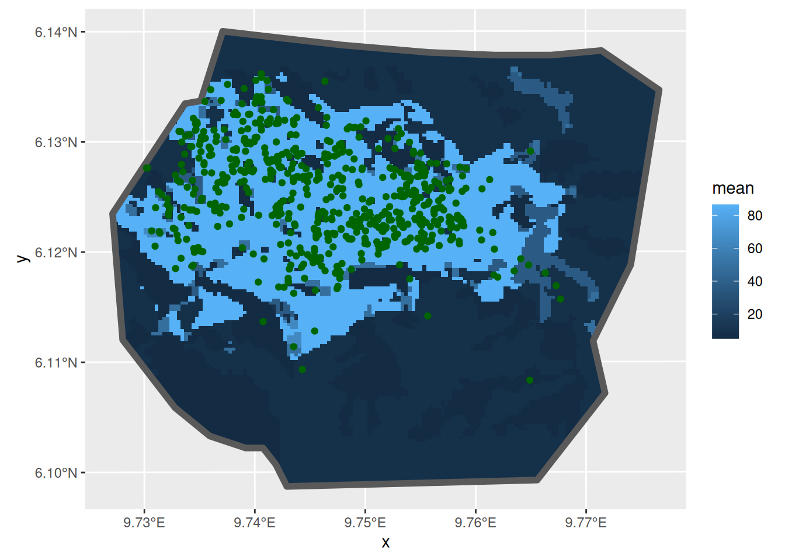
Not surprisingly, given that most nests are in Primary
vegetation, the high density is in this vegetation. But there are
substantial patches of predicted high density that have no nests, and
some areas of predicted low density that have nests. What about the
estimated abundance (there are really 647 nests there):
Continuous limit of WAIC
IC <- lgcp_IC(
fit_veg,
data = nests,
predictor = vegetation,
domain = list(geometry = mesh_int),
samplers = cvpart
)
knitr::kable(IC)| Criterion | Method | lppd | p_eff | IC | lppd.std_err | p_eff.std_err | IC.std_err |
|---|---|---|---|---|---|---|---|
| DIC | Limit | 1998.468 | 6.324597 | -3984.286 | 0.6000993 | 0.2989089 | 1.7980164 |
| DIC | INLA | 1978.534 | 5.879491 | -3945.309 | NA | NA | NA |
| DIC_adjusted | INLA | 1998.408 | 5.879491 | -3985.057 | NA | NA | NA |
| WAIC | Limit | 1998.468 | 6.151312 | -3984.633 | 0.6000993 | 0.0225973 | 1.2453931 |
| WAIC | Blockwise | 2121.944 | 11.912484 | -4220.064 | 0.0898961 | 0.0870493 | 0.3538907 |
| WAIC | INLA | 1978.842 | 6.502851 | -3944.678 | NA | NA | NA |
| WAIC_adjusted | INLA | 1998.716 | 6.502851 | -3984.425 | NA | NA | NA |
Cross validation with NA setting
fit_veg2_prep <- bru_set_missing(
fit_veg,
keep = list(-which(
as_bru_obs_list(fit_veg)[[1]]$response_data$BRU_block == 8L
))
)
fit_veg2 <- bru_rerun(fit_veg2_prep)A model with vegetation type and a SPDE type smoother
Lets try to explain the pattern in nest distribution
that is not captured by the vegetation covariate, using an SPDE:
pcmatern <- inla.spde2.pcmatern(mesh,
prior.sigma = c(1, 0.01),
prior.range = c(0.1, 0.01)
)
comp_veg_field <- geometry ~
-1 +
vegetation(gcov$vegetation, model = "factor_full") +
field(geometry, model = pcmatern)
fit_veg_field <- lgcp(comp_veg_field,
nests,
samplers = boundary,
domain = list(geometry = mesh_int)
)And plot the posterior median intensity surface
intensity_veg_field <-
predict(
fit_veg_field,
pred.df,
~ exp(field + vegetation),
n.samples = 1000
)
ggplot() +
gg(intensity_veg_field, aes(fill = q0.5), geom = "tile") +
gg(boundary, alpha = 0, lwd = 2) +
gg(nests)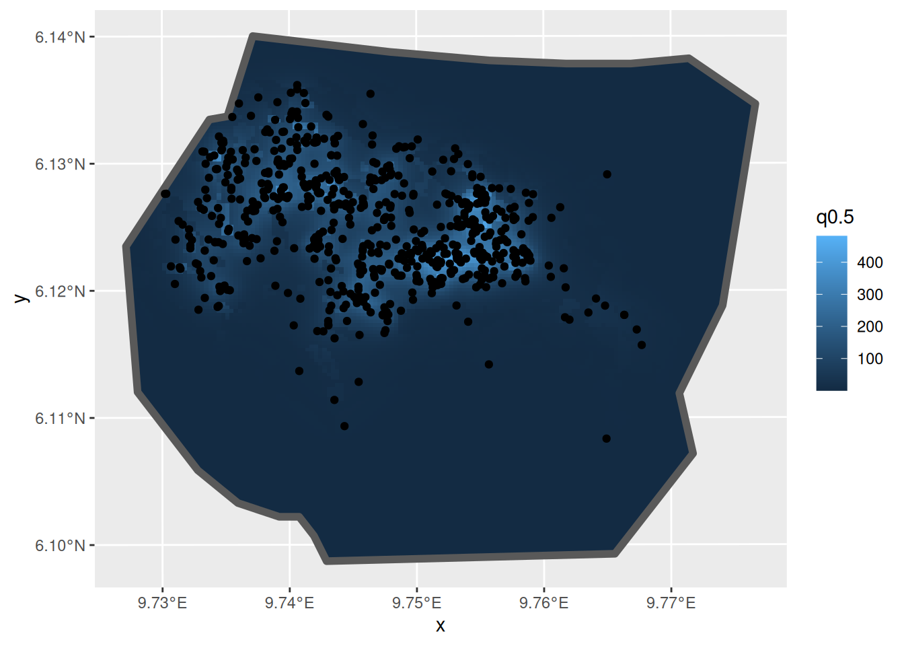
… and the expected integrated intensity (mean of abundance)
Lambda_veg_field <- predict(
fit_veg_field,
fm_int(mesh_int, boundary),
~ sum(weight * exp(field + vegetation))
)
Lambda_veg_field
#> mean sd q0.025 q0.5 q0.975 median mean.mc_std_err
#> 1 693.8811 26.84132 653.4034 691.6396 756.2148 691.6396 3.098576
#> sd.mc_std_err
#> 1 2.07222Look at the contributions to the linear predictor from the SPDE and from vegetation:
lp_veg_field <- predict(fit_veg_field, pred.df, ~ list(
smooth_veg = field + vegetation,
smooth = field,
veg = vegetation
))The function scale_fill_gradientn sets the scale for the
plot legend. Here we set it to span the range of the three linear
predictor components being plotted (medians are plotted by default).
lprange <- range(
lp_veg_field$smooth_veg$median,
lp_veg_field$smooth$median,
lp_veg_field$veg$median
)
csc <- scale_fill_gradientn(colours = brewer.pal(9, "YlOrRd"), limits = lprange)
plot.lp_veg_field <- ggplot() +
gg(lp_veg_field$smooth_veg, geom = "tile") +
csc +
gg(boundary, alpha = 0) +
ggtitle("field + vegetation")
plot.lp_veg_field.spde <- ggplot() +
gg(lp_veg_field$smooth, geom = "tile") +
csc +
gg(boundary, alpha = 0) +
ggtitle("field")
plot.lp_veg_field.veg <- ggplot() +
gg(lp_veg_field$veg, geom = "tile") +
csc +
gg(boundary, alpha = 0) +
ggtitle("vegetation")
(plot.lp_veg_field + plot.lp_veg_field.spde + plot.lp_veg_field.veg) +
plot_layout(ncol = 3, guides = "collect") &
guides(fill = guide_legend("value")) &
theme(legend.position = "right")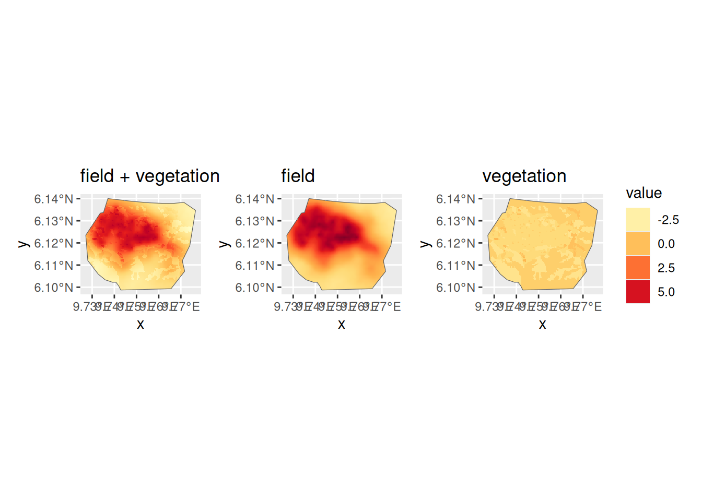
A model with SPDE only
Do we need vegetation at all? Fit a model with only an SPDE +
Intercept, and choose between models on the basis of DIC, using
deltaIC().
comp_field <- geometry ~ field(geometry, model = pcmatern) + Intercept(1)
fit_field <- lgcp(comp_field,
data = nests,
samplers = boundary,
domain = list(geometry = mesh_int),
options = list(control.compute(dic = TRUE))
)
intensity_field <- predict(fit_field, pred.df, ~ exp(field + Intercept))
ggplot() +
gg(intensity_field, geom = "tile") +
gg(boundary, alpha = 0) +
gg(nests)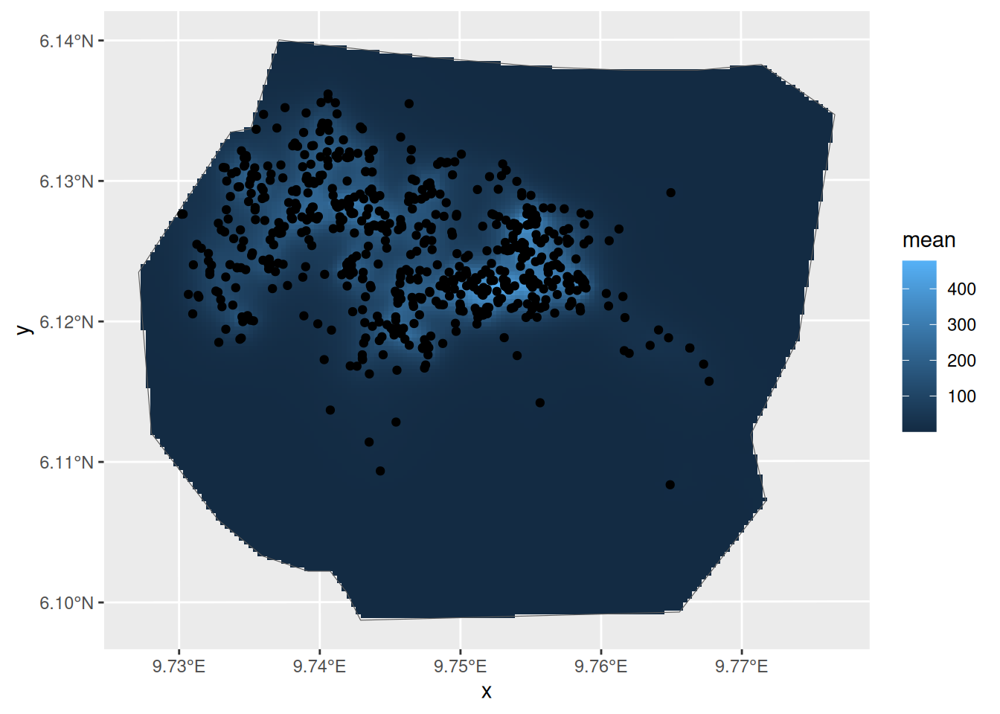
Lambda_field <- predict(
fit_field,
fm_int(mesh_int, boundary),
~ sum(weight * exp(field + Intercept))
)
Lambda_field
#> mean sd q0.025 q0.5 q0.975 median mean.mc_std_err
#> 1 697.8443 31.31112 634.5819 698.0781 753.7081 698.0781 3.539308
#> sd.mc_std_err
#> 1 2.040983| Model | DIC | Delta.DIC |
|---|---|---|
| fit_veg_field | -4897.277 | 0.00000 |
| fit_field | -4876.514 | 20.76282 |
| fit_veg | -3945.309 | 951.96773 |
New experimental definitions:
IC_veg <- lgcp_IC(
fit_veg,
data = nests,
predictor = vegetation,
domain = list(geometry = mesh_int),
samplers = cvpart
)
IC_veg_field <- lgcp_IC(
fit_veg_field,
data = nests,
predictor = vegetation + field,
domain = list(geometry = mesh_int),
samplers = cvpart
)
IC_field <- lgcp_IC(
fit_field,
data = nests,
predictor = field + Intercept,
domain = list(geometry = mesh_int),
samplers = cvpart
)
IC_data <- rbind(
cbind(IC_veg, Model = "veg"),
cbind(IC_veg_field, Model = "veg + field"),
cbind(IC_field, Model = "field")
)
knitr::kable(IC_data |>
dplyr::arrange(Criterion, Method, Model))| Criterion | Method | lppd | p_eff | IC | lppd.std_err | p_eff.std_err | IC.std_err | Model |
|---|---|---|---|---|---|---|---|---|
| DIC | INLA | 2547.125 | 108.867457 | -4876.514 | NA | NA | NA | field |
| DIC | INLA | 1978.534 | 5.879491 | -3945.309 | NA | NA | NA | veg |
| DIC | INLA | 2558.934 | 110.295110 | -4897.277 | NA | NA | NA | veg + field |
| DIC | Limit | 2555.073 | 277.976437 | -4554.193 | 0.7162814 | 9.2935630 | 20.0196886 | field |
| DIC | Limit | 1998.467 | 6.139971 | -3984.655 | 0.5865991 | 0.3520323 | 1.8772629 | veg |
| DIC | Limit | 2567.577 | 291.946055 | -4551.262 | 0.7162825 | 10.9132572 | 23.2590793 | veg + field |
| DIC_adjusted | INLA | 2566.998 | 108.867457 | -4916.261 | NA | NA | NA | field |
| DIC_adjusted | INLA | 1998.408 | 5.879491 | -3985.057 | NA | NA | NA | veg |
| DIC_adjusted | INLA | 2578.807 | 110.295110 | -4937.024 | NA | NA | NA | veg + field |
| WAIC | Blockwise | 2409.438 | 35.009616 | -4748.856 | 0.0859700 | 0.4281899 | 1.0283200 | field |
| WAIC | Blockwise | 2121.992 | 11.675990 | -4220.633 | 0.0950495 | 0.0933871 | 0.3768733 | veg |
| WAIC | Blockwise | 2409.988 | 34.389048 | -4751.198 | 0.0851305 | 0.7331737 | 1.6366086 | veg + field |
| WAIC | INLA | 2549.956 | 115.856274 | -4868.199 | NA | NA | NA | field |
| WAIC | INLA | 1978.842 | 6.502851 | -3944.678 | NA | NA | NA | veg |
| WAIC | INLA | 2562.992 | 120.025081 | -4885.933 | NA | NA | NA | veg + field |
| WAIC | Limit | 2555.073 | 86.364276 | -4937.417 | 0.7162814 | 0.1415581 | 1.7156789 | field |
| WAIC | Limit | 1998.467 | 5.972027 | -3984.991 | 0.5865991 | 0.0231775 | 1.2195532 | veg |
| WAIC | Limit | 2567.577 | 88.607722 | -4957.939 | 0.7162825 | 0.1414027 | 1.7153703 | veg + field |
| WAIC_adjusted | INLA | 2569.829 | 115.856274 | -4907.946 | NA | NA | NA | field |
| WAIC_adjusted | INLA | 1998.716 | 6.502851 | -3984.425 | NA | NA | NA | veg |
| WAIC_adjusted | INLA | 2582.865 | 120.025081 | -4925.681 | NA | NA | NA | veg + field |
CV and SPDE parameters for Model 2
We are going with Model fit_veg_field. Lets look at the
spatial distribution of the coefficient of variation
ggplot() +
gg(intensity_veg_field, aes(fill = sd / mean), geom = "tile") +
gg(boundary, alpha = 0) +
gg(nests)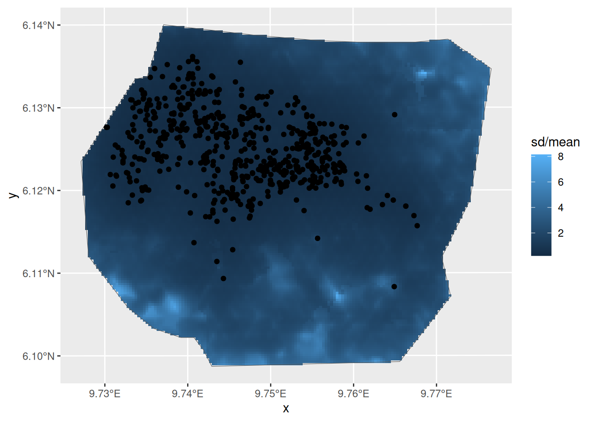
Plot the vegetation “fixed effect” posteriors. First get their names
- from $marginals.random$vegetation of the fitted object,
which contains the fixed effect marginal distribution data
flist <- vector("list", NROW(fit_veg_field$summary.random$vegetation))
for (i in seq_along(flist)) {
flist[[i]] <- plot(fit_veg_field, "vegetation", index = i)
flist_combined <- if (i == 1) flist[[i]] else flist_combined + flist[[i]]
}
flist_combined +
plot_layout(ncol = 3, guides = "collect")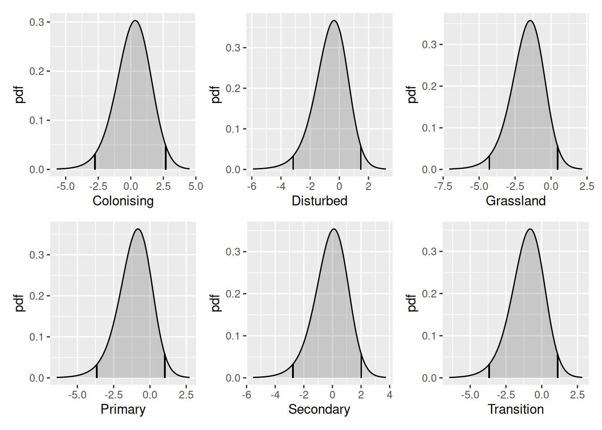
Use spde.posterior( ) to obtain and then plot the SPDE
parameter posteriors and the Matern correlation and covariance functions
for this model.
spde.range <- spde.posterior(fit_veg_field, "field", what = "range")
spde.logvar <- spde.posterior(fit_veg_field, "field", what = "log.variance")
range.plot <- plot(spde.range)
var.plot <- plot(spde.logvar)
(range.plot / var.plot)
corplot <-
plot(spde.posterior(fit_veg_field, "field", what = "matern.correlation"))
covplot <-
plot(spde.posterior(fit_veg_field, "field", what = "matern.covariance"))
(covplot / corplot)Continuous covariates
Now lets try a model with elevation as a (continuous) explanatory variable. (First centre elevations for more stable fitting.)
elev <- gcov$elevation
elev <- elev - mean(terra::values(elev), na.rm = TRUE)
ggplot() +
gg(elev, geom = "tile") +
gg(boundary, alpha = 0)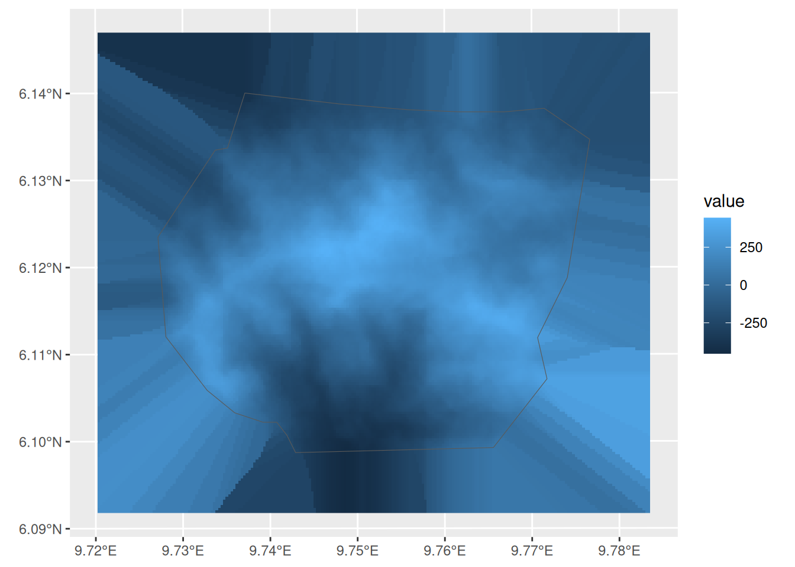
The elevation variable here is of class ‘SpatRaster’, that can be
handled in the same way as the vegetation covariate, with automatic
evaluation via an eval_spatial() method. However, since in
some cases data may be stored differently, other methods are needed to
access the stored values, or there’s some post-processing to be done. In
such cases, we can define a function that knows how to evaluate the
covariate at arbitrary points in the survey region, and call that
function in the component definition. The method
eval_spatial() is the method that handles this
automatically, and supports terra SpatRaster
and sf geometry points objects, and mismatching coordinate
systems as well. In the following evaluator example function, we only
add infilling of missing values as a post-processing step.
# Note: this method is usually not needed; the automatic invocation of
# `eval_spatial()` method by the component input evaluator is usually
# sufficient.
f.elev <- function(where) {
# Extract the values
v <- eval_spatial(elev, where, layer = "elevation")
# Fill in missing values; this example would work for
# SpatialPixelsDataFrame data
# if (anyNA(v)) {
# v <- bru_fill_missing(elev, where, v)
# }
v
}For brevity we are not going to consider models with elevation only, with elevation and a SPDE, and with SPDE only. We will just fit one with elevation and SPDE. We create our model to pass to lgcp thus:
matern <- inla.spde2.pcmatern(mesh,
prior.sigma = c(1, 0.01),
prior.range = c(0.1, 0.01)
)
comp_elev_field <- geometry ~ elev(f.elev(.data.), model = "linear") +
field(geometry, model = matern) + Intercept(1)Note how the elevation effect is defined. We could alternatively use
the terra grid object directly (causing
inlabru to automatically call eval_spatial()),
like in the vegetation case: we specified it like
elev(elev, model = "factor_full")whereas with the special function method we specify the covariate like this:
elev(f.elev(.data.), model = "linear")Most applications can use the automatic method, and the special function method is included only as an example of how to handle more complex cases.
We also now include an intercept term in the model.
The model is fitted in the usual way:
fit_elev_field <- lgcp(comp_elev_field, nests,
samplers = boundary,
domain = list(geometry = mesh_int)
)Summary and model selection
summary(fit_elev_field)
#> inlabru version: 2.15.0
#> INLA version: 26.06.08
#> Latent components:
#> elev: main = linear(f.elev(.data.))
#> field: main = spde(geometry)
#> Intercept: main = linear(1)
#> Observation models:
#> Model tag: <No tag>
#> Family: 'cp'
#> Data class: 'sf', 'tbl_df', 'tbl', 'data.frame'
#> Response class: 'numeric'
#> Predictor: geometry ~ elev + field + Intercept
#> Additive/Linear/Rowwise: TRUE/TRUE/TRUE
#> Used components: effect[elev, field, Intercept], latent[]
#> Time used:
#> Pre = 0.265, Running = 3.4, Post = 0.166, Total = 3.83
#> Fixed effects:
#> mean sd 0.025quant 0.5quant 0.975quant mode kld
#> elev 0.003 0.002 0.000 0.003 0.006 0.003 0
#> Intercept -0.609 1.024 -2.877 -0.530 1.181 -0.382 0
#>
#> Random effects:
#> Name Model
#> field SPDE2 model
#>
#> Model hyperparameters:
#> mean sd 0.025quant 0.5quant 0.975quant mode
#> Range for field 1.85 0.371 1.25 1.81 2.70 1.72
#> Stdev for field 2.22 0.329 1.66 2.19 2.95 2.13
#>
#> Deviance Information Criterion (DIC) ...............: -4877.04
#> Deviance Information Criterion (DIC, saturated) ....: 320147.32
#> Effective number of parameters .....................: 111.41
#>
#> Watanabe-Akaike information criterion (WAIC) ...: -4868.25
#> Effective number of parameters .................: 118.78
#>
#> Marginal log-Likelihood: 2370.48
#> is computed
#> Posterior summaries for the linear predictor and the fitted values are computed
#> (Posterior marginals needs also 'control.compute=list(return.marginals.predictor=TRUE)')
deltaIC(fit_veg, fit_veg_field, fit_field, fit_elev_field)
#> Model DIC Delta.DIC
#> 1 fit_veg_field -4897.277 0.00000
#> 2 fit_elev_field -4877.038 20.23912
#> 3 fit_field -4876.514 20.76282
#> 4 fit_veg -3945.309 951.96773New definitions:
IC_elev_field <- lgcp_IC(
fit_elev_field,
data = nests,
predictor = elev + field + Intercept,
domain = list(geometry = mesh_int),
samplers = cvpart
)
IC_data <- rbind(IC_data, cbind(IC_elev_field, Model = "elev + field"))
knitr::kable(IC_data |> dplyr::arrange(Criterion, Method, Model))| Criterion | Method | lppd | p_eff | IC | lppd.std_err | p_eff.std_err | IC.std_err | Model |
|---|---|---|---|---|---|---|---|---|
| DIC | INLA | 2549.924 | 111.405421 | -4877.038 | NA | NA | NA | elev + field |
| DIC | INLA | 2547.125 | 108.867457 | -4876.514 | NA | NA | NA | field |
| DIC | INLA | 1978.534 | 5.879491 | -3945.309 | NA | NA | NA | veg |
| DIC | INLA | 2558.934 | 110.295110 | -4897.277 | NA | NA | NA | veg + field |
| DIC | Limit | 2558.447 | 280.293693 | -4556.307 | 0.7222690 | 9.1449199 | 19.7343779 | elev + field |
| DIC | Limit | 2555.073 | 277.976437 | -4554.193 | 0.7162814 | 9.2935630 | 20.0196886 | field |
| DIC | Limit | 1998.467 | 6.139971 | -3984.655 | 0.5865991 | 0.3520323 | 1.8772629 | veg |
| DIC | Limit | 2567.577 | 291.946055 | -4551.262 | 0.7162825 | 10.9132572 | 23.2590793 | veg + field |
| DIC_adjusted | INLA | 2569.798 | 111.405421 | -4916.785 | NA | NA | NA | elev + field |
| DIC_adjusted | INLA | 2566.998 | 108.867457 | -4916.261 | NA | NA | NA | field |
| DIC_adjusted | INLA | 1998.408 | 5.879491 | -3985.057 | NA | NA | NA | veg |
| DIC_adjusted | INLA | 2578.807 | 110.295110 | -4937.024 | NA | NA | NA | veg + field |
| WAIC | Blockwise | 2409.727 | 35.005531 | -4749.444 | 0.0856589 | 0.3797570 | 0.9308318 | elev + field |
| WAIC | Blockwise | 2409.438 | 35.009616 | -4748.856 | 0.0859700 | 0.4281899 | 1.0283200 | field |
| WAIC | Blockwise | 2121.992 | 11.675990 | -4220.633 | 0.0950495 | 0.0933871 | 0.3768733 | veg |
| WAIC | Blockwise | 2409.988 | 34.389048 | -4751.198 | 0.0851305 | 0.7331737 | 1.6366086 | veg + field |
| WAIC | INLA | 2552.901 | 118.775628 | -4868.250 | NA | NA | NA | elev + field |
| WAIC | INLA | 2549.956 | 115.856274 | -4868.199 | NA | NA | NA | field |
| WAIC | INLA | 1978.842 | 6.502851 | -3944.678 | NA | NA | NA | veg |
| WAIC | INLA | 2562.992 | 120.025081 | -4885.933 | NA | NA | NA | veg + field |
| WAIC | Limit | 2558.447 | 88.429743 | -4940.035 | 0.7222690 | 0.1445588 | 1.7336557 | elev + field |
| WAIC | Limit | 2555.073 | 86.364276 | -4937.417 | 0.7162814 | 0.1415581 | 1.7156789 | field |
| WAIC | Limit | 1998.467 | 5.972027 | -3984.991 | 0.5865991 | 0.0231775 | 1.2195532 | veg |
| WAIC | Limit | 2567.577 | 88.607722 | -4957.939 | 0.7162825 | 0.1414027 | 1.7153703 | veg + field |
| WAIC_adjusted | INLA | 2572.775 | 118.775628 | -4907.998 | NA | NA | NA | elev + field |
| WAIC_adjusted | INLA | 2569.829 | 115.856274 | -4907.946 | NA | NA | NA | field |
| WAIC_adjusted | INLA | 1998.716 | 6.502851 | -3984.425 | NA | NA | NA | veg |
| WAIC_adjusted | INLA | 2582.865 | 120.025081 | -4925.681 | NA | NA | NA | veg + field |
knitr::kable(
IC_data |>
delta_IC() |>
dplyr::select(
Method, Criterion, lppd, p_eff, IC, Delta_IC, IC.std_err, Model
)
)| Method | Criterion | lppd | p_eff | IC | Delta_IC | IC.std_err | Model |
|---|---|---|---|---|---|---|---|
| INLA | DIC | 2558.934 | 110.295110 | -4897.277 | 0.000000 | NA | veg + field |
| INLA | DIC | 2549.924 | 111.405421 | -4877.038 | 20.239117 | NA | elev + field |
| INLA | DIC | 2547.125 | 108.867457 | -4876.514 | 20.762818 | NA | field |
| INLA | DIC | 1978.534 | 5.879491 | -3945.309 | 951.967729 | NA | veg |
| Limit | DIC | 2558.447 | 280.293693 | -4556.307 | 0.000000 | 19.7343779 | elev + field |
| Limit | DIC | 2555.073 | 277.976437 | -4554.193 | 2.113799 | 20.0196886 | field |
| Limit | DIC | 2567.577 | 291.946055 | -4551.262 | 5.044637 | 23.2590793 | veg + field |
| Limit | DIC | 1998.467 | 6.139971 | -3984.655 | 571.651762 | 1.8772629 | veg |
| INLA | DIC_adjusted | 2578.807 | 110.295110 | -4937.024 | 0.000000 | NA | veg + field |
| INLA | DIC_adjusted | 2569.798 | 111.405421 | -4916.785 | 20.239117 | NA | elev + field |
| INLA | DIC_adjusted | 2566.998 | 108.867457 | -4916.261 | 20.762818 | NA | field |
| INLA | DIC_adjusted | 1998.408 | 5.879491 | -3985.057 | 951.967729 | NA | veg |
| Blockwise | WAIC | 2409.988 | 34.389048 | -4751.198 | 0.000000 | 1.6366086 | veg + field |
| Blockwise | WAIC | 2409.727 | 35.005531 | -4749.444 | 1.754413 | 0.9308318 | elev + field |
| Blockwise | WAIC | 2409.438 | 35.009616 | -4748.856 | 2.342097 | 1.0283200 | field |
| Blockwise | WAIC | 2121.992 | 11.675990 | -4220.633 | 530.565306 | 0.3768733 | veg |
| INLA | WAIC | 2562.992 | 120.025081 | -4885.933 | 0.000000 | NA | veg + field |
| INLA | WAIC | 2552.901 | 118.775628 | -4868.250 | 17.682901 | NA | elev + field |
| INLA | WAIC | 2549.956 | 115.856274 | -4868.199 | 17.734570 | NA | field |
| INLA | WAIC | 1978.842 | 6.502851 | -3944.678 | 941.255206 | NA | veg |
| Limit | WAIC | 2567.577 | 88.607722 | -4957.939 | 0.000000 | 1.7153703 | veg + field |
| Limit | WAIC | 2558.447 | 88.429743 | -4940.035 | 17.904129 | 1.7336557 | elev + field |
| Limit | WAIC | 2555.073 | 86.364276 | -4937.417 | 20.521506 | 1.7156789 | field |
| Limit | WAIC | 1998.467 | 5.972027 | -3984.991 | 972.947903 | 1.2195532 | veg |
| INLA | WAIC_adjusted | 2582.865 | 120.025081 | -4925.681 | 0.000000 | NA | veg + field |
| INLA | WAIC_adjusted | 2572.775 | 118.775628 | -4907.998 | 17.682901 | NA | elev + field |
| INLA | WAIC_adjusted | 2569.829 | 115.856274 | -4907.946 | 17.734570 | NA | field |
| INLA | WAIC_adjusted | 1998.716 | 6.502851 | -3984.425 | 941.255206 | NA | veg |
Predict and plot the density
pred_elev_field <- predict(
fit_elev_field,
pred.df,
~ list(
int = exp(field + elev + Intercept),
int.log = field + elev + Intercept
)
)
p1 <- ggplot() +
gg(pred_elev_field$int, aes(fill = log(sd)), geom = "tile") +
gg(boundary, alpha = 0) +
gg(nests, shape = "+")
p2 <- ggplot() +
gg(pred_elev_field$int.log, aes(fill = exp(mean + sd^2 / 2)), geom = "tile") +
gg(boundary, alpha = 0) +
gg(nests, shape = "+")
(p1 | p2)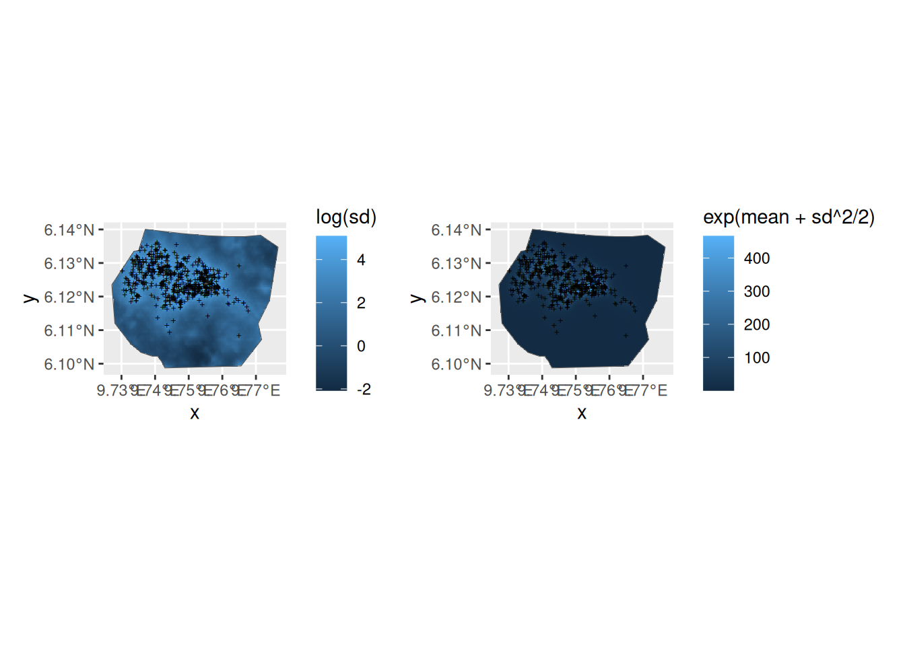
Now look at the elevation and SPDE effects in space. Leave out the Intercept because it swamps the spatial effects of elevation and the SPDE in the plots and we are interested in comparing the effects of elevation and the SPDE.
First we need to predict on the linear predictor scale.
lp_elev_field <- predict(
fit_elev_field,
pred.df,
~ list(
smooth_elev = field + elev,
elev = elev,
smooth = field
)
)The code below, which is very similar to that used for the vegetation factor variable, produces the plots we want.
lprange <- range(
lp_elev_field$smooth_elev$mean,
lp_elev_field$elev$mean,
lp_elev_field$smooth$mean
)
library(RColorBrewer)
csc <- scale_fill_gradientn(colours = brewer.pal(9, "YlOrRd"), limits = lprange)
plot.lp_elev_field <- ggplot() +
gg(lp_elev_field$smooth_elev, mask = boundary, geom = "tile") +
csc +
theme(legend.position = "bottom") +
gg(boundary, alpha = 0) +
ggtitle("SPDE + elevation")
plot.lp_elev_field.spde <- ggplot() +
gg(lp_elev_field$smooth, mask = boundary, geom = "tile") +
csc +
gg(boundary, alpha = 0) +
ggtitle("SPDE")
plot.lp_elev_field.elev <- ggplot() +
gg(lp_elev_field$elev, mask = boundary, geom = "tile") +
csc +
gg(boundary, alpha = 0) +
ggtitle("elevation")
(plot.lp_elev_field + plot.lp_elev_field.spde + plot.lp_elev_field.elev) +
plot_layout(ncol = 3, guides = "collect") &
guides(fill = guide_legend("value")) &
theme(legend.position = "right")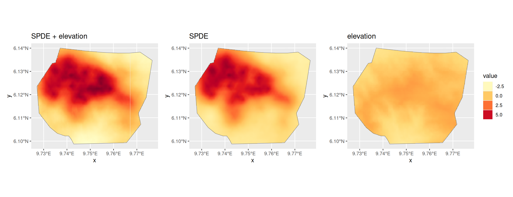
You might also want to look at the posteriors of the fixed effects and of the SPDE. Adapt the code used for the vegetation factor to do this.
Lambda_elev_field <- predict(
fit_elev_field,
fm_int(mesh_int, boundary),
~ sum(weight * exp(Intercept + elev + field))
)
Lambda_elev_field
#> mean sd q0.025 q0.5 q0.975 median mean.mc_std_err
#> 1 695.5474 29.34504 636.4544 697.4044 753.2339 697.4044 3.3367
#> sd.mc_std_err
#> 1 2.01098
flist <- vector("list", NROW(fit_elev_field$summary.fixed))
for (i in seq_along(flist)) {
flist[[i]] <- plot(fit_elev_field, rownames(fit_elev_field$summary.fixed)[i])
flist_combined <- if (i == 1) flist[[i]] else flist_combined + flist[[i]]
}
flist_combined +
plot_layout(ncol = 2, guides = "collect")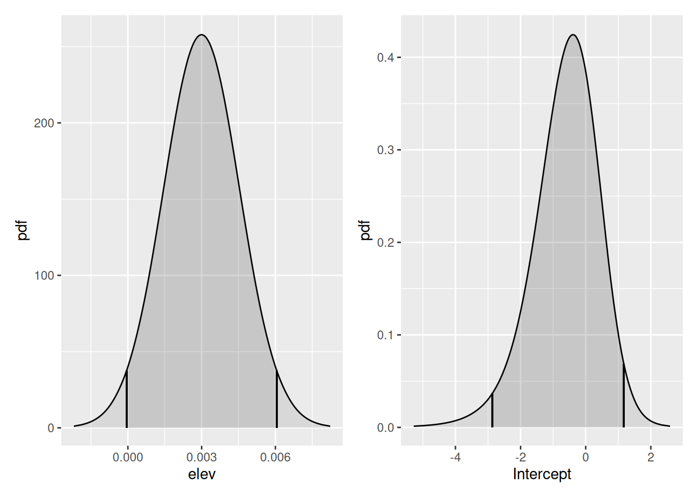
Plot the SPDE parameter posteriors and the Matern correlation and covariance functions for this model.
spde.range <- spde.posterior(fit_elev_field, "field", what = "range")
spde.logvar <- spde.posterior(fit_elev_field, "field", what = "log.variance")
range.plot <- plot(spde.range)
var.plot <- plot(spde.logvar)
(range.plot / var.plot)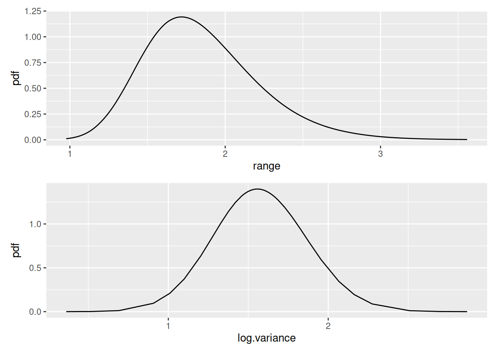
corplot <-
plot(spde.posterior(fit_elev_field, "field", what = "matern.correlation"))
covplot <-
plot(spde.posterior(fit_elev_field, "field", what = "matern.covariance"))
(covplot / corplot)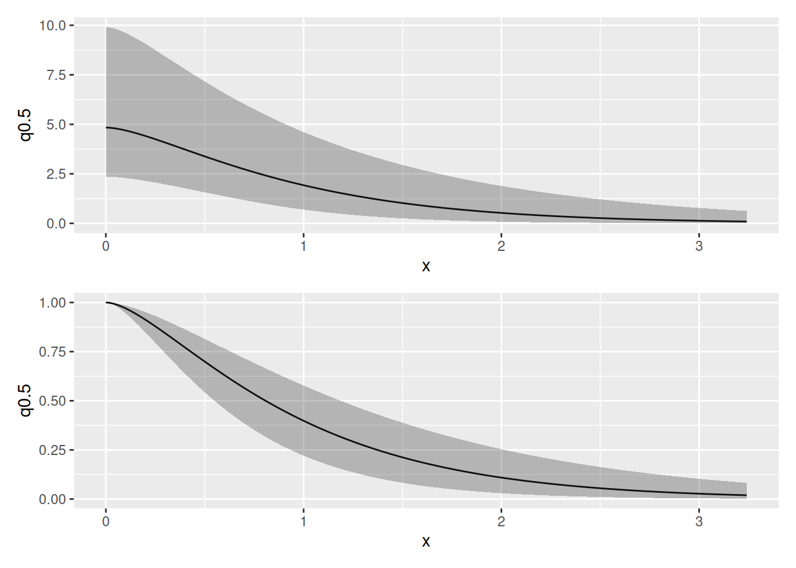
Also estimate abundance. The data.frame in the second
call leads to inclusion of N in the prediction object, for
easier plotting.
Lambda_elev_field <- predict(
fit_elev_field, fm_int(mesh_int, boundary),
~ sum(weight * exp(field + elev + Intercept))
)
Lambda_elev_field
#> mean sd q0.025 q0.5 q0.975 median mean.mc_std_err
#> 1 695.0666 26.94285 650.0671 693.883 747.1842 693.883 3.020236
#> sd.mc_std_err
#> 1 1.629755
Nest_elev_field <- predict(
fit_elev_field,
fm_int(mesh_int, boundary),
~ data.frame(
N = 200:1000,
density = dpois(200:1000,
lambda = sum(weight * exp(field + elev + Intercept))
)
),
n.samples = 2000
)Plot in the same way as in previous practicals
Nest_elev_field$plugin_estimate <-
dpois(Nest_elev_field$N, lambda = Lambda_elev_field$median)
ggplot(data = Nest_elev_field) +
geom_line(aes(x = N, y = mean, colour = "Posterior")) +
geom_line(aes(x = N, y = plugin_estimate, colour = "Plugin"))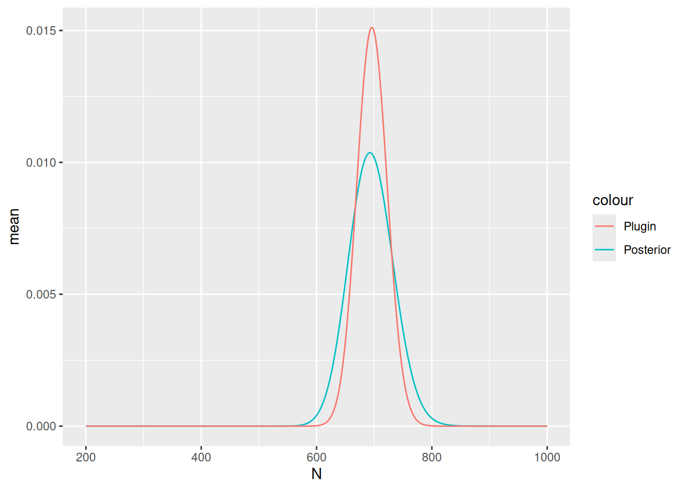
Non-spatial evaluation of the covariate effect
The previous examples of posterior prediction focused on spatial
prediction. It is also possible to evaluate the effect of a covariate
directly, by bypassing the component definition input. This is done by
adding the suffix _eval() to the end of the component name
in the predictor expression, and supplying data that is sufficient for
evaluating , and supplying data needed by the input arguments to this
function, see bru_comp_eval().
Note on backwards version support, starting with version
2.2.8 Prior to version 2.8.0, this feature
required setting the include argument to
character(0) to disable normal component evaluation for all
components. From version 2.8.0, inlabru
automatically detects which model components are used by the prediction
expression, including the use of component _eval() calls,
making the include argument unnecessary. From version
2.11.0, the include, exclude, and
include_latent arguments have been deprecated in favour of
the used argument that takes input generated by
bru_used(), with a deprecation warning being generated from
version 2.12.0.9003.
Since the elevation effect in this model is linear, the resulting plot isn’t very interesting, but the same method can be applied to non-linear effects (e.g. “rw2”) as well, and combined into general R expressions.
elev.pred <- predict(
fit_elev_field,
data.frame(elevation = seq(0, 100, length.out = 1000)),
formula = ~ elev_eval(elevation)
# include = character(0) # Not needed from version 2.8.0
)
ggplot(elev.pred) +
geom_line(aes(elevation, mean)) +
geom_ribbon(
aes(elevation,
ymin = q0.025,
ymax = q0.975
),
alpha = 0.2
) +
geom_ribbon(
aes(elevation,
ymin = mean - 1 * sd,
ymax = mean + 1 * sd
),
alpha = 0.2
)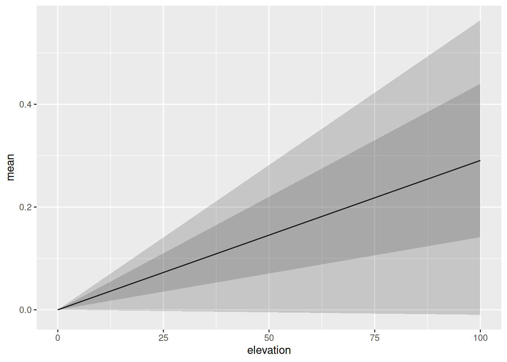
A 1D Example
Try fitting a 1-dimensional model to the point data in the
inlabru dataset Poisson2_1D. This comes with a
covariate function called cov2_1D. Try to reproduce the
plot below (used in lectures) showing the effects of the
Intercept + z and the SPDE. (You may find it
helpful to build on the model you fitted in the previous practical,
adding the covariate to the model specification.)
data(Poisson2_1D)
x <- seq(0, 55, length.out = 50)
mesh <- fm_mesh_1d(x, degree = 2, boundary = "free")
process_model <- inla.spde2.pcmatern(
mesh,
prior.sigma = c(1, 0.01),
prior.range = c(5, 0.01),
constr = TRUE
)
comp <- x ~
z(cov2_1D(x), model = "linear") +
smooth(x, model = process_model) +
Intercept(1)
fitcov1D <- lgcp(comp,
pts2,
domain = list(x = mesh),
samplers = tibble::tibble(x = cbind(0, 55))
)
pr.df <- data.frame(x = x)
prcov1D <- predict(
fitcov1D,
pr.df,
~ list(
Intensity = exp(z + smooth + Intercept),
z = exp(z + Intercept),
smooth = exp(smooth)
),
n.samples = 2000
)
ggplot() +
gg(prcov1D$Intensity,
aes(colour = "Intensity", fill = "Intensity"),
alpha = 0.2,
lwd = 1.25
) +
gg(prcov1D$smooth,
aes(colour = "Smooth", fill = "Smooth"),
alpha = 0.2,
lwd = 1.25
) +
gg(prcov1D$z,
aes(colour = "z-effect", fill = "z-effect"),
alpha = 0.2,
lwd = 1.25
) +
geom_line(aes(x, lambda2_1D(x), colour = "True intensity"), lwd = 1.25) +
geom_point(data = pts2, aes(x = x), y = 0.2, shape = "|", cex = 4) +
xlab(quote(bold(s))) +
ylab(quote(hat(lambda)(bold(s)) ~ ~"and its components")) +
guides(colour = guide_legend("Quantity"), fill = "none")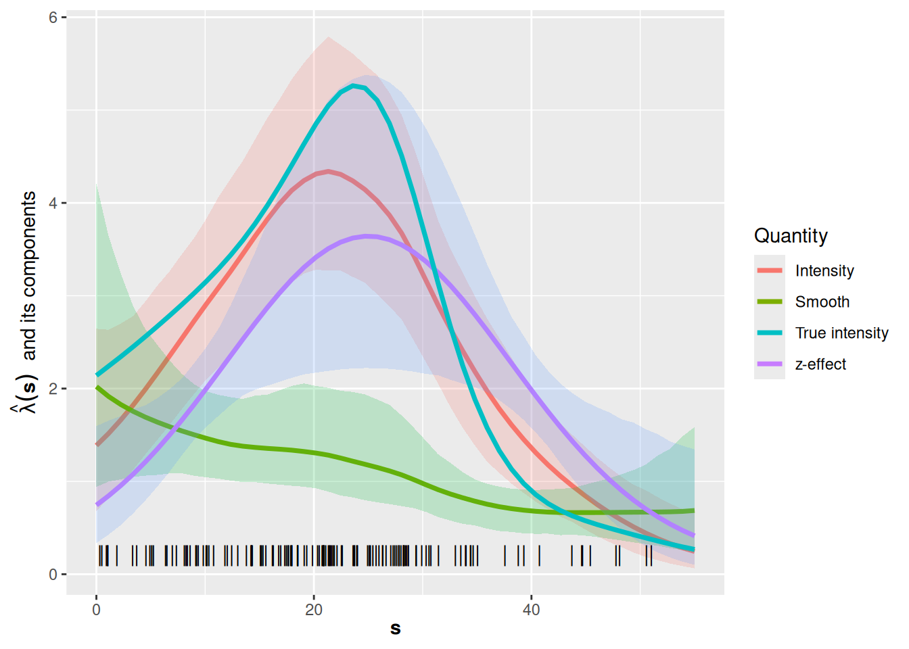